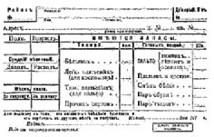
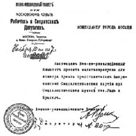

BÖLÜM X

MOSKOVA


Askerî Devrimci Komite sarsılmaz bir iradeyle, başarının peşini bırakmadı:
14 Kasım...
Bütün kolordu, tümen ve alay Komitelerine; bütün işçi, asker ve köylü delegeleri sovyetlerine, herkese ve herkese.
Kazaklar, yunker’ler, bahriyeliler ve işçiler arasında varılan anlaşma gereğince Aleksandr Feodoroviç Kerenski’nin bir halk mahkemesine sevki kararlaştırılmıştır. Aşağıda adı yazılı örgütler adına Kerenski’nin tutuklanmasını ve derhal Petrograd’a getirilerek mahkemeye sevki için emir verilmesini istiyoruz.
İmza :
Ussiri 1. Süvari Tümeni Kazakları; Petrograd Muvazzaf Hafif Piyade Birliği yunker’ler Komitesi; Beşinci Ordu delegesi.
Halk komiseri, DİBENKO
Kurtuluş Komitesi, Duma, Sosyalist Devrimci Parti Merkez Komitesi de –bir yandan Kerenski’nin kendi üyeleri olduğunu gururla ilan ederlerken– Kerenski’nin yalnızca Kurucu Meclis’e karşı sorumlu olacağını söyleyerek bu bildiriyi şiddetle protesto ediyorlardı.
16 Kasım akşamı iki bin Kızıl Muhafızın Zagorodni Prospekt’den aşağı doğru yürüyüşlerini seyrettim. Önlerinde giden askerî bando Marsailles’i çalıyordu. Günün olaylarına ne kadar uygundu! Koyu karanlık işçi dizilerinin üstünde kan kırmızısı bayraklar dalgalanıyor. “Kızıl Petrograd”ı savunmuş olan kardeşlerini karşılamaya gidiyorlar. Alacakaranlıkta erkekler ve kadınlar ayaklarını yere vura vura yürüyorlar; süngüleri sallanıyor havada. Işıkları sönük, kaygan çamurlu caddelerden, burjuva kalabalıklarının arasından geçiyorlar. Burjuvalar tiksintiyle, ama korka korka bakıyorlar onlara...
Herkes onlara karşı: İşadamları, vurguncular, yatırımcılar, toprak sahipleri, subaylar, politikacılar, öğretmenler, serbest meslek sahipleri, dükkâncılar, memurlar, ajanlar, öteki sosyalist partiler... Hepsi Bolşeviklere karşı sonsuz bir kin besliyorlar. Sovyetlerden yana olanlar, yoksul işçiler, bahriyeliler, bütün morali bozulmuş askerler, topraksız köylüler ve birkaç da –ama yalnızca birkaç– aydın...
Kerenski’nin yenilgi haberi, umutsuz sokak savaşlarının birer dalga gibi her yanı kapladığı Rusya’da, en uzak köşelere kadar yayılınca, oralardan yankılar geldi: Kazan, Saratov, Novgorod, Vinnitza’da sokaklarda kan gövdeyi götürmüştü. Moskova’da Bolşevikler toplarını burjuvazinin kalesine çevirmişlerdi: Kremlin’i dövüyorlardı.
“Kremlin’i bombardıman ediyorlar!” Haber Petrograd sokaklarında bir çeşit korku ile ağızdan ağıza dolaşıyor: “Beyaz ve pırıl pırıl Moskova”dan gelenler korkunç şeyler anlatıyorlar. Binlerce insan ölmüş: Tverskaya ve Kuznetkski Most alevler içindeymiş; Vasili Blajenni kilisesi harabeye dönmüş; Uspenski Katedrali çöküyormuş; Kremlin’in Spaskaya kapısı yıkılmak üzereymiş; Duma yerle bir olmuş... (1)
Bolşeviklerin yaptığı hiçbir iş, kutsal Rusya’nın kalbine yöneltilmiş olan bu korkunç dinsizce hareketten daha kötü olmazdı. Kutsal Ortodoks kilisesini yıkan ve Rus ulusunun kutsal sığınaklarını yerle bir eden top sesleri dindarların yüreklerine işliyordu...
Eğitim Komiseri Lunaçarski Kasımın 15’inde Halk Komiserleri Konseyi’nin toplantısında ağladı: “Buna tahammül edemem! Güzelliğin ve geleneğin bu korkunç yok edilişine tahammülüm yok...” diye bağırarak odadan dışarı fırladı.
Öğleden sonraki gazetelerde istifa mektubu çıktı:
Moskova’dan gelen haberlerden orada olup bitenleri yeni öğrenmiş bulunuyorum.
Kutsal St. Basil Katedrali, Assumpsiyon Katedrali bombardıman edilmektedir. Petrograd ve Moskova’daki sanat hazinelerinin toplanmış bulunduğu Kremlin, topçu ateşi altındadır. Binlerce ölü var.
Korkunç savaş bir cinayet haline gelmiştir.
Elde kalan ne? Daha neler olacak?
Buna tahammülüm yok. Bardağım doldu. Bu felaketlere katlanamayacağım. Beni deliye çeviren düşüncelerin baskısı altında çalışmam mümkün değil!
İşte bundan ötürü Halk Komiserleri Konseyi’nden ayrılıyorum.
Bu kararın önemini gayet iyi biliyorum. Ama daha fazla tahammül edemem. (2)
Aynı gün Kremlin’deki Beyaz Muhafızlar ve yunker’ler teslim oldular, kendilerine dokunulmadan Kremlin’den çıkmalarına izin verildi. Barış anlaşması şöyleydi:
1. Kamu Güvenlik Komitesi ilga edilmiştir.
2. Beyaz Muhafızlar silahlarını bırakacaklar ve dağılacaklardır. Subaylar kılıçlarını ve nizami silahlarını muhafaza edeceklerdir. Askerî okullarda yalnız eğitim için gerekli silahlar bulundurulacaktır. Yunker’lerin bütün öteki silahları teslim edilecektir. Devrimci Komite şahıs hürriyetini ve dokunulmazlığını garanti eder.
3. İkinci maddede sözü geçen silahsızlanma sorununu çözümlemek üzere özel bir komisyon kurulmuştur. Komisyon barış konuşmalarına katılan bütün örgütlerin temsilcilerinden kuruludur.
4. Bu barış anlaşmasının imza edildiği andan itibaren her iki taraf ateşkes emri verecek ve her türlü askerî hareketi durduracak, bu emre harfi harfine itaat edilmesini sağlayacak bütün tedbirleri alacaktır.
5. Anlaşma imza edildiği zaman her iki tarafın aldığı bütün esirler serbest bırakılacaklardır.
O günden sonra iki gün şehir Bolşeviklerin yönetiminde kalmış; bodrumlarda saklanmış olan yurttaşlar ölülerini aramak üzere korka korka dışarı çıkıyorlar, sokaklardaki barikatlar kaldırılıyormuş. Böyle olduğu halde Moskova’nın tahribi üzerine anlatılan hikayeler azalmak şöyle dursun, daha da artıyordu... Bu korkunç hikayelerin etkisi altında biz de Moskova’ya gitmeye karar verdik.
Petrograd yüzyıldan beri hükümetin merkezi olduğu halde, eninde sonunda ve hâlâ da yapay bir şehirdi. Moskova gerçek Rusya’ydı, geçmişin ve geleceğin Rusyası. Rus halkının devrim üzerindeki gerçek duygusunu Moskova’da öğrenebilirdik. Hayat orada daha yoğundu.
Geçen haftanın içinde, Petrograd Askerî Devrimci Komitesi, demiryolu işçilerinin alt katlarındaki duygulardan yararlanarak, Nikolay Demiryolunun denetimini eline geçirmiş, tren dolusu bahriyeliyi, Kızıl Muhafızı güney batıya göndermişti... Smolni bize izin kâğıdı verdi. Bu izin kâğıdı olmadan kimse başkentten dışarı çıkamıyordu... Tren istasyona çekildiği sırada, sırtlarında kocaman yiyecek torbaları, perişan kılıklı bir sürü asker kapılara saldırdı, pencereleri kırdı, kompartımanlara ve bagajlara doldu. Vagonların üstlerine bile çıktılar. Üçümüz zar zor bir kompartımana yaklaşabildik, ama o sırada yirmi kadar asker içeri doldu... Yalnız dört kişilik oturacak yer vardı; tartıştık, itiraz ettik, kondüktör de bizden yana çıktı... Ama askerler yalnızca güldüler. Birkaç burcoy’un (burjuva) rahatını mı düşüneceklerdi? Smolni’den aldığımız kâğıtları gösterdik. Askerlerin durumu birden değişti.
İçlerinden biri, “Gelin, yoldaşlar” diye bağırdı. “Bunlar Amerikan tavarişi. Devrimimizi görmek için otuz bin verst’ten gelmişler, kim bilir ne kadar yorulmuşlardır...”

Moskova Askerî Devrimci Komitesi tarafından, Ordu’ya ve yoksul işçilere giysi
temin edebilmek amacıyla Moskova’daki bütün burjuva evlerine
dağıtılan soru formu.
Askerler, kibarca ve dostça özür dileyerek kompartımandan çıkmaya başladılar. Az sonra kondüktöre para verip kapıyı kapattırmış olan şişman, iyi giyinmiş iki Rus’un bulunduğu başka bir kompartımana zorla girmeye çalıştıklarını işittik...
Akşamın saat yedisine doğru istasyondan çıktık. Odunla işleyen küçük, hafif bir lokomotifin çektiği çok uzun bir tren yavaş yavaş ve ikide birde durarak ilerliyordu. Vagonların üzerindeki askerler ayaklarını vuruyor, acıklı köy türküleri söylüyorlardı. Koridor o kadar sıkışıktı ki geçmeye imkân yoktu. Bütün gece boyunca ateşli siyasi tatışmalar sürüp gitti. Kondüktör, arada sırada görünüyor, alışkanlıkla bilet soruyordu. Bizden başka kimsede bilet yoktu. Yarım saatlik bir didinmeden sonra umutsuzca elini havaya kaldırdı ve bir daha görünmedi. Hava boğucuydu, duman ve pis kokular her yanı sarmıştı. Eğer pencereler kırık olmasaydı geceleyin havasızlıktan boğulacaktık.
Sabahın geç saatlerinde gözlerimizi karla kaplı bir dünyaya açtık. Acı bir soğuk vardı. Öğleye doğru bir köylü kadın elinde ekmek dolu bir sepetle, kahve yerine içilen ılık bir sıvı dolu bir teneke kutu, trene bindi. Bundan sonra akşam ortalık kararıncaya kadar, yalnızca tıklım tıklım dolu trenin ikide birde durup hızla kalkmaları, istasyonlarda aç kalabalığın pek az yiyecek bulunan büfelere saldırmaları ve büfelerin içindekileri temizlemeleri... Bu durmalar sırasında bir kere Nogin ile Rikov’un yanına koştum. Bu iki adam konseyden ayrılmış, kendi sovyetlerinin önünde üzüntülerini bildirmek üzere Moskova’ya dönen iki komiserdi.10 Daha ilerde Buharin. Kısa boylu, kırmızı sakallı, fanatik bakışlı bir adam. Buharin için, “Lenin’den daha sol” derler...
Sonra üç kampana vuruşu... Trene koşuyoruz. Tıklım tıklım dolu, gürültülü koridorda iğrile büğrüle yolumuzu buluyoruz... İyi huylu kalabalık, rahatsızlığa alaylı bir sabırla katlanıyor; Petrograd’daki durumdan tutun da İngiliz sendika sistemine kadar her şey üzerinde durmadan tartışıyor, trendeki burcoy’larla bağıra bağıra konuşuyor. Biz Moskova’ya varmadan önce; her vagonda yiyecek bulmak ve dağıtmak üzere bir komite örgütlenmiş, bu komiteler siyasi partilere bölünmüş ve bu partiler ana ilkeler üzerinde çatışmalara başlamışlardı bile...
Moskova, istasyonunda kimseler yoktu. Dönüş biletlerimizi almak üzere komiserlik bürosuna gittik. Omuzunda teğmen işareti bulunan durgun bir genç, Smolni’den aldığımız kâğıtları gösterince sinirlendi ve kendisinin Bolşevik olmadığını, Kamu Güvenliği Komitesi’ni temsil ettiğini söyledi... Çok garip bir durum. Şehrin alınması gürültüsü sırasında başarı kazananlar şehrin tek demiryolu istasyonunu unutmuş olacaklardı...
Görünürde hiçbir araba yoktu. Caddenin birkaç sokak aşağısında küçük bir kızakta uyuyan garip kılıklı bir izvoşçik’i uyandırdık. “Şehir merkezine kaça götürürsün?”
Başını kaldırdı. “Barin hiçbir otelde yer bulamayacaktır,” dedi. “Ama sizi yüz rubleye gezdiririm...” Devrimden önce iki rubleydi. İtiraz ettik. O yalnızca omuz silkti. “Bu zamanda kızak sürmek için cesaret ister,” dedi. Elli rubleden aşağıya indiremedik... Ve sessiz, karlı, yarı aydınlık caddelerden geçerken arabacı bize altı günlük çatışma sırasında başından geçenleri anlattı. “Kızak sürerken, ya da köşede bir müşteri beklerken,” diyordu, “birdenbire bir Bom! Bir top mermisi Bom! Top mermisi düşüverir. Ta-ta-ta-ta! Başka bir yerden bir makineli tüfek... Ben dört nal. Herifler durmadan ateş eder. Güzel, sessiz bir sokak bulur, orada dururum. Azıcık kestiririm.. Bom! Bir mermi daha. Ta-ta-ta-ta. Namussuzlar! Namussuz herifler! B-r-r-r!”
Şehrin merkezinde, karla kaplı caddelerde, bir hastalık sonu durumunun sessizliği var. Yalnız birkaç sokak lambası yanıyor; yalnız birkaç yaya, kaldırımlarda hızlı hızlı yürüyor. Büyük stepten buz gibi bir rüzgâr esiyor, insanın kemiklerine işliyor. İlk rastladığımız otele girdik. Bürosunda iki mum yanıyor, sadece.
“Evet, çok rahat odalarımız var. Ama bütün pencereleri kırık. Eğer gosbodin’i biraz temiz hava rahatsız etmezse...”
Tverskaya’da dükkânların camları kırılmıştı ve caddede mermi çukurlarıyla sökülmüş kaldırım taşları. Hangi otele gittiysek hepsi dolu ya da otel sahiplerinin hepsi korkuyor, “Yok, yok. Odamız kalmadı! Oda yok!” diyorlar. Büyük bankaların ve büroların bulunduğu ana caddelerde Bolşevik topçuları bayağı iş görmüşler. Bir sovyet memuru anlatıyor: “Yunker’leri ve Beyaz Muhafızları bulamayınca onlara yardım edenleri bombaladık...”
Sonunda büyük Hotel National bizi aldı, çünkü biz yabancıydık ve Askerî Devrimci Komite yabancıların bulundukları yerleri korumaya söz vermişti... En üst kata çıktığımız zaman otel müdürü şarapnellerin kırdığı pencereleri bize gösterdi. Görünmeyen bir Bolşeviğe yumruğunu sallayarak, “Hayvanlar!” dedi. “Ama durun! Onların da sırası gelecek; o komik hükümetleri birkaç gün içinde düşecek. O zaman biz göstereceğiz onlara!”
Etyemezler lokantasında yemeğimizi yedik. Lokantanın adı insanı duygulandırıyor: “Hiçbir canlıyı yemem!” Duvarlarda Tolstoy’un resmi. Sonra caddeye fırladık.
Moskova Sovyeti’nin karargâhı eski Genel Valinin sarayı, Skobeliyev meydanına bakan beyaz bir bina. Kapıda KızıI Muhafızlar nöbet bekliyorlar. Geniş bir merdiven. Duvarlarına komite toplantılarının bildirileri, siyasi partilerin açıklamaları yapıştırılmış. Yüksek tavanlı bir sürü holden geçtik. Duvarlarda kırmızı kurdelalara sarılmış yaldız çerçeveli resimler vardı... Şahane kristal avizeli ve altın yaldız kornişli büyük devlet salonuna girdik. Hafif bir mırıltı, salonu dolduran dikiş makinalarının çıkardığı gürültüye karışıyor. Büyük büyük kırmızı ve siyah kumaş topları açılmış, yerdeki parkenin ve masaların üzerine yılanlar gibi uzatılmış, masaların üzerinde yüz kadar kadın devrimde ölenlerin cenazeleri için kurdela ve bayrak kesip dikiyorlar. Kadınların yüzü hayatlarının en zor dakikalarını yaşıyorlarmış gibi sert ve korku içinde; büyük bir ciddiyetle çalışıyorlar, birçoğunun gözleri ağlamaktan kıpkırmızı... Kızıl Ordu’nun kayıpları çok...
Bir kenarda duran masada, Rozov. Gözlüklü, sakallı, zeki bir adam. Üzerinde siyah bir işçi gömleği. Bizi ertesi sabah yapılacak cenaze töreninde Merkez Komitesi ile birlikte bulunmaya çağırdı.
“Şu Sosyalist Devrimcilerle Menşeviklere bir şey öğretmeye imkân yok!” diye bağırdı. “Uzlaşmaya alışmışlar. Düşünün bir kere! Yunker’lerle birlikte cenaze töreni yapmamızı teklif ediyorlar!”
Üzerinde eski bir asker kaputu, başında eski bir kasket, tanıdık bir asker, salonun ötesinden doğru bize geldi; Melniçanski’yi tanıdık. New Jersey, Bayone’da saatçi idi. Standart Oil grevinde bulunmuştu. George Melcher diye bilinirdi. Şimdi Moskova’da Maden İşçileri Sendikası’nın sekreteriymiş; çarpışma sırasında da Devrimci Komite komiserlerindenmiş.
Üzerindeki eski elbiseyi göstererek, “Görüyorsun ya” diye bağırdı, “Yunker’ler ilk geldikleri zaman Kremlin’de bizim çocuklarla beraberdim. Bizi bodruma kapattılar; kaputumu, paramı, saatimi, parmağımdaki yüzüğümü bile aldılar. Bütün kalanlar, bunlar!”
Moskova’yı ikiye ayıran altı günlük kanlı savaşın birçok ayrıntısını kendisinden dinledim. Durum Petrograd’daki gibi olmamış; Şehir Duması yunker’lerle Beyaz Muhafızların komutasını ele almış. Belediye Başkanı Rudnev, Duma Başkanı Minor, Kamu Güvenlik Komitesi’nin harekâtını yönetmişler. Demokratik eğilimde olan Şehir Komutanı Riyabetsev Askerî Devrimci Komite’ye karşı gelmek istememiş; ama Duma onu zorlamış... Kremlin’in işgalini Belediye Başkanı istemiş, “Size ateş etmeye cesaret edemezler,” demiş...
Uzun zaman hareketsizlikten morali bozulmuş bir garnizon alayına iki yandan saldırmışlar. Alay toplanmış, ne yapılması gerektiğini konuşmuş. Sonunda alayın tarafsız kalmasına ve eski çalışmasına devam etmesine karar verilmiş. Alayın eski çalışması dediği şey, sokaklarda lastik ve ayçiçeği satmaktan başka bir şey değildi elbette...
“En kötüsü,” dedi Melniçanski, “bir yandan dövüşürken bir yandan da örgütlenmek zorunda kalmamız. Karşımızdakiler ne istediklerini biliyorlardı; ama bizim taraftaki askerlerin başında sovyet ve işçiler vardı... Kimin komuta edeceği üzerinde korkunç tartışmalar yapıldı; bazı alaylar ne yapacaklarına karar vermek için günlerce aralarında konuşup durdular; subaylar da bizi bırakıp gidince elimizde emir verebilecek kurmay heyeti kalmadı...”
Bana çok canlı sahneler anlattı. Havanın soğuk ve kapalı olduğu bir gün Nikitskaya’nın köşesinde duruyormuş. Köşe, makineli tüfek kurşunlarıyla delik deşikmiş. Bir sürü küçük çocuk toplanmış orada. Bunlar gazete satan başıboş çocuklarmış. Sanki yeni bir oyun bulmuşlar gibi bağırıp çağırıyorlarmış. Ateş hafifleyinceye kadar beklemişler. Sonra caddenin karşı kaldırımına geçmeye kalkmışlar... Birçoğu ölmüş, geri kalanlar da oynaya oynaya, birbirlerini ite kaka geriye gelmişler...
Akşamleyin geç vakit Dvoriyanskoye Sobraniye’ye (Soylular Kulübü) gittik. Moskova’daki Bolşevikler burada toplanmış, Halk Komiserleri Konseyi’nden ayrılmış olan Nogin ve Rikov’u ve ötekilerin raporunu dinliyorlar.
Toplantı yeri bir tiyatroydu. Eski rejim zamanında burada amatörler, subaylara ve kibar bayanlara son Fransız komedilerini oynarlarmış.
Başlangıçta toplantı yerini aydınlar doldurmuştu. Bunlar şehrin merkezinde yaşayan aydınlardı. Nogin konuştu, dinleyicilerden çoğu onunla birlik oldu. İşçiler geç vakit geldiler: İşçi sınıfı şehrin dışındaki mahallelerde oturuyordu ve tramvaylar da işlemiyordu. Gece yarısına doğru onarlık, yirmişerlik gruplar halinde sandalyelere vurmaya başladılar. Bunlar iri yarı kaba insanlardı, üzerlerinde kaba elbiseler vardı. Savaştan daha yeni dönmüşlerdi. Bir haftadan beri deli gibi dövüşmüşler, yanlarında birçok arkadaşlarının öldüğünü görmüşlerdi.
Nogin’e ıslıklar ve öfkeli bağırışmalarla saldırıldığı sırada toplantı daha resmen açılmamıştı bile. Nogin tartışmaya, anlatmaya boşuna uğraştı. Dinlemediler. Halk Komiserleri Konseyi’ni bırakmıştı; savaş daha devam ederken yerinden ayrılmıştı. Burjuva basınına gelince, artık Moskova’da burjuva basını diye bir şey kalmamıştı: Şehir Duması bile dağıtılmıştı (3). Buharin ayağa kalktı. Yabansı ve mantıklı sözlerle saldırdı, vurdu, saldırdı, vurdu... Meraklı bakışlarla dinlediler onu. Karar, ezici bir çoğunlukla, Halk Komiserleri Konseyi çalışmalarını desteklemek... Moskova’nın sesi buydu...
Gece geç vakit boş caddelerden ve İberya kapısının altından geçerek Kremlin’in önündeki Kızıl Meydan’a geldik. Vasili Blojenni Kilisesi bir rüya gibi; parlak, kıvrımlı, süslü kubbeleri, karanlıkta belli belirsiz. En ufak bir yıkıntı görünmüyor... Meydanın karşısında Kremlin’in karanlık kuleleri ve duvarları... Yüksek duvarların üstünde gizli alevlerin kırmızı ışıkları titreşip duruyor; birtakım konuşmalar bize kadar geliyor, kazma kürek sesleri işitiyoruz. Meydanı geçiyoruz.
Duvarların dibinde büyük toprak ve taş yığınları yükselmiş. Yığınların tepesine tırmandık. Aşağıya baktığımızda, yüzlerce işçi ve askerin yanan büyük ateşlerin ışığında beş metre derinlikte, elli metre uzunlukta kocaman bir çukur kazdıklarını gördük.
Genç bir asker bizimle Almanca konuştu. “Kardeşlik Mezarlığı,” dedi, “Yarın buraya devrim için canlarını vermiş olan beş yüz proleteri gömeceğiz.”
Bizi çukura indirdi. Kazmalar ve kürekler hızlı hızlı inip kalkıyor, toprak dağ gibi yükseliyor, kimse konuşmuyor. Başımızın üstünde gök yıldız dolu. Ve eski İmparatorluk Kremlin’i yanımızda bir kale gibi yükseliyor.
Bir öğrenci, “Bu kutsal yere,” dedi, “Rusya’nın bu en kutsal yerine, en kutsal insanlarımızı gömeceğiz. Çar mezarlarının bulunduğu bu yerlerde çarlarımızla halk yan yana uyuyacaklar...” Savaşta aldığı mermi yarasından ötürü kolunu sarmışlardı. Koluna baktı. “Siz yabancılar, bu Ortaçağ monarşisine bu kadar uzun zaman katlandığımız için bizi kim bilir ne kadar ayıplıyorsunuzdur!” dedi. “Ama biz çarın dünya yüzündeki tek zalim olmadığını biliyorduk; kapitalizm daha kötüydü ve bütün dünyada kapitalizm imparatorluğu vardı...”
Oradan ayrıldığımız sırada çukurda çalışan işçiler yorulmuş; hava soğuk olduğu halde hepsi ter içinde kalmıştı. Yorgun yorgun çukurdan dışarı çıkıyorlardı. Kızıl Meydan’dan doğru birçok karanlık insan biçimleri hızlı hızlı geldiler. Çukurlara daldılar, araçları ellerine aldılar ve kazmaya başladılar, bir tek kelime söylemeden...
Böylece bütün gece halktan gönüllüler değişe değişe hiç durmadan çukur kazdılar ve sabahın soğuk ışığı meydana vurduğu sırada karla kaplı meydan ile Kardeşlik Mezarlığı’nın artık bitmiş olan koyu çukurları birden ortaya çıktı.
Gün doğmadan önce kalktık, Skobeliyev meydanına giden caddelerden hızlı hızlı yürüdük. Koskoca şehirde bir tek insan görülmüyordu; ama uzaktan yakından, sanki bir rüzgâr yaklaşıyormuş gibi, hafif bir kımıldanış işitiliyordu. Soluk sabah ışığında, küçük bir erkek ve kadın grubu sovyet karargâhının önünde toplanmış; ellerinde kızıl bayrak demetleri; bayrakların üzerinde sarı yaldızla “Moskova Sovyetleri Merkez Yürütme Komitesi” yazılı: Aydınlık arttı. Uzaktan gelen hareket sesleri derinleşti ve daha yükseldi, sürekli ve büyük bir bas ses haline geldi. Şehir ayağa kalkıyordu. Tverskaya’ya doğru yola çıktık. Başlarımızın üstünde bayraklar dalgalanıyor. Yolumuzun üzerindeki küçük kiliseler kapalı ve karanlıktı. İberyan Virjin Kilisesi de kapalı. Tahta yeni geçen çarlar, Kremlin’de taç giymeden önce bu kiliseyi ziyaret ederlermiş. Gece gündüz her zaman açık bulunurdu ve her zaman kalabalıktı. Altın, gümüş, mücevher ikonları her zaman pırıl pırıl yanardı. Oysa şimdi, dediklerine göre; Napolyon’un Moskova’ya girmesinden beri ilk defa olarak kandilleri sönmüş...
Kremlin’i bombardıman eden o saygısız pis heriflerin yuvası, kutsal Ortodoks Kilisesi de Moskova üzerindeki koruyucu ışığını artık kesmişti. Kiliseler karanlık, sessiz ve soğuktu; papazlar ortadan kaybolmuşlardı. Kızılların gömme töreninde papaz bulunmayacaktı. Kafirlerin mezarı başında dua okunmayacaktı, Moskova Metropoliti Tihon az sonra sovyetleri aforoz edecekti.
Dükkânlar da kapalıydı. Mülk sahibi sınıflar evlerinden dışarı çıkmamışlardı ama başka nedenlerden ötürü... Bu bir halk günüydü. Bugünün geleceği, kayalara çarpan dalgalardan belliydi.
İberya kapısının altından bir insan nehri akmaya başladı. Geniş Kızıl Meydan’a binlerce insan yayıldı. Eskiden İberya kilisesinin önünden geçen herkes haç çıkardığı halde bugün, aynı kilisenin önünden geçenler kiliseye dönüp bakmıyorlardı bile.
Kremlin duvarı boyunca toplanmış olan, sımsıkı insan kalabalığının arasından kendimize zorla yol açarak toprak yığınlarından birinin üstüne çıktık. Oraya bizden önce birkaç kişi daha çıkmıştı. Aralarında Muranov vardı. Muranov Moskova Komutanı seçilmişti. Uzun boylu, saf bakışlı, kibar yüzlü, sakallı bir adam...
Kızı1 Meydan’a açılan bütün caddelerden insan selleri akıyordu: binlerce ve binlerce. Hepsi de yoksul emekçi halk. Askerî Bando Enternasyonal çalarak geliyordu. Birdenbire marş kendiliğinden halka yayıldı, deniz dalgacıklarının yayılışı gibi... yavaş ve ağır ağır. Kremlin’in duvarından yere kadar büyük bayraklar sarkıtılmış...
Meydanda acı bir rüzgâr esti, bayrakları uçurdu. Şimdi şehrin ayrı ayrı mahallelerinden, ayrı ayrı fabrikaların işçileri ölülerini getirmeye başlamışlardı. Kapının altından ellerinde bayraklar ve kan gibi kızıl tabutlarla geçtikleri görülüyor. Kabaca rendelenmiş tahtalardan yapılma tabutlar. Bu tabutları, başlarını önlerine eğmiş, ağlayarak yürüyen kaba insanlar taşıyor. Arkalarında kadınlar bağırıyor, ağlıyor, içlerini çekiyor ya da ölü gibi beyaz yüzleriyle kaskatı yürüyorlar. Tabutların bazıları açık, kapaklarını arkadan gelenler taşıyor. Bazılarının üzerine altın ya da gümüş işlemeli kumaşlar örtülmüş... ya da tabutun üzerine bir asker kasketi çivilenmiş. Yapma çiçeklerden buketler de var.
Cenazeler, geçtikçe açılan, sonra yeniden kapanan insan kalabalığı arasından bize doğru yaklaştı. Şimdi kapıdan sonsuz bir bayrak seli akmaya başladı. Üzerlerinde her tonda kırmızı, gümüş rengi, yaldızlı yazılar. Bayrakların tepelerinden kurdelalar sarkıyor -ve arada anarşistlerin siyah üzerine beyazla yazılmış bayrakları. Bando devrimcilerin cenaze marşını çalıyor. Halk başları açık, ayakta, marşı hep bir ağızdan söylüyor. Cenaze alayındakiler hıçkırıklarını tuta tuta kalın seslerle katılıyorlar marşa...

Askerî Devrimci Komite bu belgeyle, Amerikan Sosyalist Parti ve Sosyalist
basının temsilcileri Reed ve Bryant’a Kremlin’de araştırma yapabilmeleri
için gerekli izni vermektedir.
Fabrika işçilerinin arasında asker bölükleri de var. Onlar da kendi tabutlarını taşıyorlar. Selam vererek geçen süvari taburları, topçu bataryaları. Bir top arabası, siyah ve beyaz bayraklara sarılı... Sanki artık hep böyle kalacakmış gibi. Bayrakların üzerinde şu yazı: “Onurlu, genel, demokratik bir barış istiyoruz!”
Yürüyenler tabutlarıyla birlikte yavaş yavaş mezarın başına kadar geldiler. Tabutları taşıyanlar toprakların üstüne çıktılar ve sonra çukura indiler. Çoğu kadındı. Ölülerin arkasından öteki kadınlar geliyordu: bitkin genç kadınlar ya da yaralı hayvanlar gibi bağıran buruşuk yüzlü ihtiyarlar... Çocuklarını ve kocalarını Kardeşlik Mezarlığı’na kadar getirmişler... Avutan eller onları tutmaya çalıştıkça onlar da bağırıyordu: Yoksullar birbirlerini böyle severler.
Cenaze töreni bütün gün sürdü. Alaylar İberya kapısından geliyorlar, Nikolskaya yolundan çıkıp gidiyorlardı. Bayrak selleri durmadan akıyordu. Hepsinin üzerinde umut, kardeşlik ve büyük gelecek sözleri... Cenaze alayını elli bin kişi seyrediyor...
Beş yüz tabut çukurlara birer birer indirildi. Hava kararmıştı, ama sarkan ve dalgalanan bayraklar hâlâ gelip geçiyor, bando cenaze marşı çalıyor ve büyük halk topluluğu da marşı söylüyordu. Mezarın üzerindeki ağaçların yapraksız dallarında çelenkler garip, renk renk çiçekler gibi sarkıyor. İki yüz kişi mezara toprak atmaya başladı. Atılan toprakların tabutlardan çıkardığı takırtılar marşa karışıyor...
Işıklar yandı. Son bayraklar da geçti; son ağlayan kadınlar da geçti; dönüp arkalarına korkuyla baktılar. Proleter denizi Kızıl Meydan’dan yavaş yavaş çekildi...
Dinine bağlı Rus halkının ahret yolculuğunda artık papazlara ihtiyacı kalmadığını birdenbire anladım.
10 XI. Bölüme bakınız.